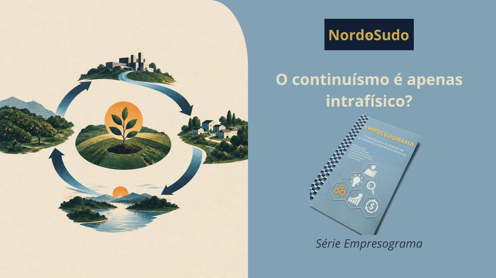

Redação: Rafael Guimarães Pereira | Revisão: Vânia Cristina Pereira Cabral
A pergunta desta semana do Empresograma é a número 010: "Uma empresa que emprega com cosmoética o plano de fomento na continuidade dos negócios (Nota: máxima nesta folha de avaliação)."
Para compreender essa questão, talvez seja necessário primeiro ampliar o significado de alguns dos seus termos. Cosmoética é uma ética mais ampla, que considera os diferentes veículos de manifestação da consciência, as múltiplas dimensões, as bioenergias e a série de existências. Não se limita, portanto, aos efeitos imediatos e intrafísicos das nossas decisões.
Plano de fomento pode ser entendido como um plano para a melhoria contínua, para o crescimento da atuação da empresa, para a ampliação da qualidade dos produtos e serviços e para o melhor atendimento ao cliente. Nesse contexto, fomentar significa também ampliar a capacidade de interassistência da empresa. E continuidade dos negócios?
Se o negócio que está sendo realizado é cosmoético, se sua atuação está inserida em processos de interassistência, então sua continuidade passa a ter um sentido diferente. Não se trata simplesmente de manter uma empresa funcionando ou aumentar seu faturamento. Trata-se de permitir que uma atividade considerada evolutivamente válida continue produzindo seus efeitos.
Empregar de forma cosmoética um plano de fomento para essa continuidade parece, então, exigir que alguns fatores estejam bem costurados. O primeiro é ter um propósito evolutivo claro.
A empresa começa com alguma coisa: uma missão, uma necessidade identificada, um problema ou uma dor real que pretende ajudar a resolver. Existe, portanto, uma razão para sua existência que vai além da própria manutenção do negócio.
O segundo é utilizar meios cosmoéticos para alcançar esse propósito. Não se pode utilizar quaisquer meios para atingir objetivos considerados bons. Os recursos financeiros, humanos, materiais e demais meios empregados nas atividades precisam ser obtidos e utilizados de forma legítima e cosmoética. Um propósito positivo não torna automaticamente cosmoéticos os caminhos utilizados para alcançá-lo. Por fim, os resultados das atividades também precisam ser efetivamente interassistenciais.
Isso significa que a atuação da empresa produz uma transformação real para melhor entre os envolvidos. Clientes, colaboradores, fornecedores, parceiros e demais participantes da atividade saem dessas interações, de alguma maneira, com um nível evolutivo um pouco maior.
Nesse sentido, o plano de fomento não serviria apenas para fazer a empresa crescer. Serviria para fomentar a continuidade de uma atividade que possui propósito evolutivo, utiliza meios cosmoéticos e produz resultados interassistenciais. Talvez essa seja uma maneira de olhar para a continuidade dos negócios por outra perspectiva: não basta perguntar se uma empresa pode continuar existindo. É preciso perguntar se aquilo que ela realiza merece continuar sendo fomentado.
E, se merece, como podemos utilizar o crescimento, a melhoria contínua e a continuidade dos negócios para ampliar sua capacidade de interassistência?
#Empresograma #EmpreendedorismoEvolutivo #Cosmoética #Nordosudo